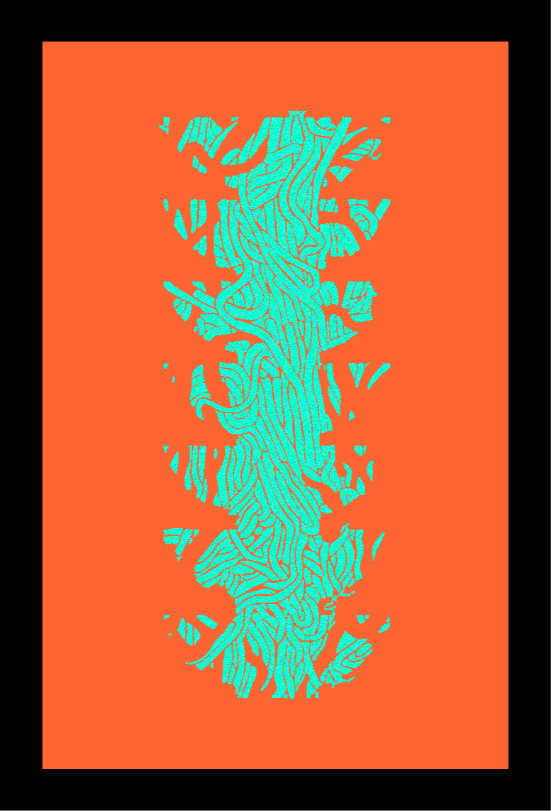
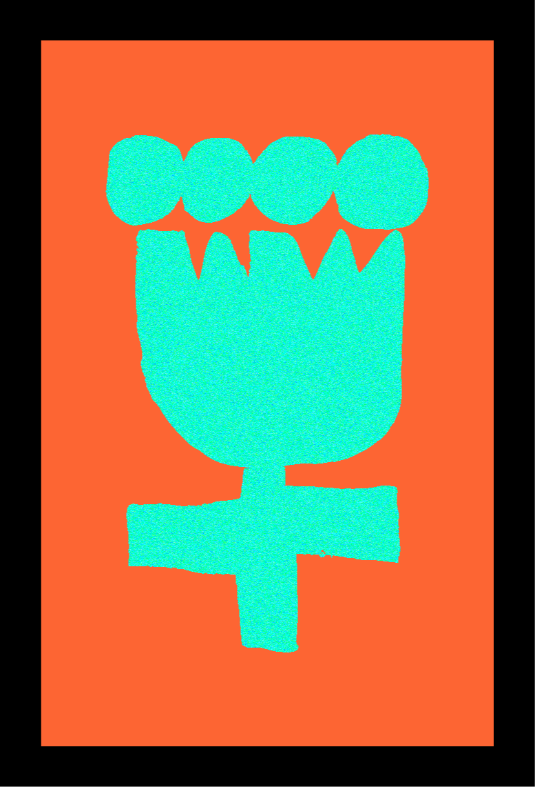

[ 여름 ]
- ❶ <혼종의 중화냉면> 범유진
- 
- 범유진 작가님의 '혼종의 중화냉면'은 중학교때부터 친한 언니가 추천해줘서 읽은 '냉면'이라는 소설집에 수록되어있는 단편소설이다.
- 중화냉면은 소설속 주인공의 국적과 닮은 음식이다. 소설을 보고 추천해준 언니랑 중화냉면을 먹으러 갔었는데 소설을 처음 본
- 22년부터 우리는 매년 여름 그 중국집에서 중화냉면을 먹고 도서관을 간다. 중화냉면 진짜 맛있다.
- 📍 동천홍 광호문점 | 서울 종로구 새문안로9길 23 2층
- ❷ <아무튼, 여름> 김신회
- 
- 아무튼 시리즈 중 '아무튼, 여름'은 에세이 장르의 책이다. 책을 보면 작가님이 여름을 좋아하는 이유를 알 수 있다.
- 나도 이 책을 읽기전엔 여름을 싫어했다. 근데 신기하게 다른사람이 여름을 좋아하는 이유를 읽은것 뿐인데 정말로 여름이 좋아졌다.
- 물론 여름은 여전히 덥고 짜증난다. 그래서 나는 여름이 느껴질때 쯤 수박을 먹으면서 이 책을 읽는다. 앞으로 계속 봐야할 여름을 좋아하기위해서
- 📍 마트 과일코너 | 수박